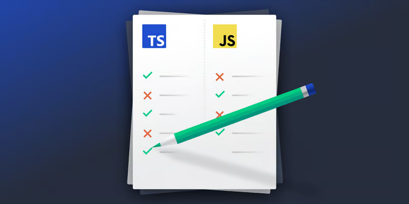

TypeScript or JavaScript? Developers contemplate this choice for greenfield web or Node.js projects, but it’s a question worth considering for existing projects too. A superset of JavaScript, TypeScript offers all of the features of JavaScript plus some additional perks. TypeScript intrinsically encourages us to code cleanly, making the code more scalable. However, projects can contain as much plain JavaScript as we like, so using TypeScript is not an all-or-nothing proposition
TypeScript adds an explicit type system to JavaScript, allowing for the strict enforcement of variable types. TypeScript runs its type checks while transpiling—a form of compiling that converts TypeScript code to the JavaScript code web browsers and Node.js understand.
If we were to instruct the transpiler to treat the original JavaScript snippet as if it were TypeScript, the transpiler would automatically infer that var1 should be a string | number. This is a TypeScript union type, which allows us to assign var1 a string or a number at any time. Having resolved the type conflict, our TypeScript code would transpile successfully. Executing it would produce the same result as the JavaScript example.
JavaScript is ubiquitous, powering projects of all sizes, applied in ways that would have been unimaginable during its infancy in the 1990s. While JavaScript has matured, it falls short when it comes to scalability support. Accordingly, developers grapple with JavaScript applications that have grown in both magnitude and complexity.